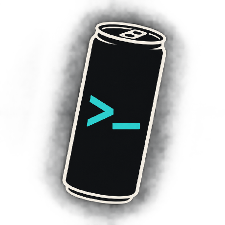

<!doctype html><html lang="en"><head><meta charset="utf-8"><meta name="viewport" content="width=device-width,initial-scale=1"><title>Networking Toolkit | DevDen</title><link rel="icon" type="image/png" href="logo.png"><meta name="theme-color" content="#1b212c"><link rel="stylesheet" href="style.css"></head><body><div class="shell"><aside id="sidebar"><header><b>NETWORKING<br>TOOLKIT<small class="brand-credit">by DevDen</small></b></header><nav id="navigation"></nav><footer>WEB EDITION · OFFLINE READY</footer></aside><main id="main"><div id="content"></div></main></div><script src="app.js"></script></body></html>
